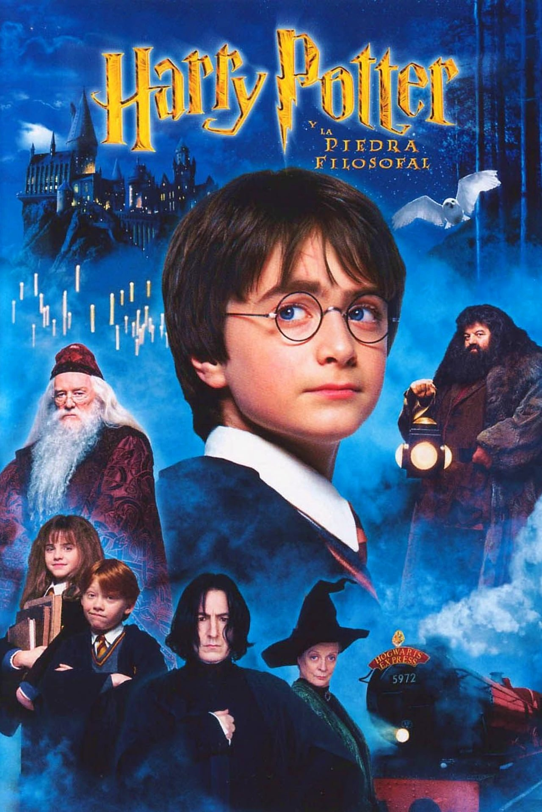

Harry Potter y la Piedra Filosofal

Resumen
Harry Potter es un niño huérfano que vive con sus únicos parientes vivos, la familia Dursley, en un barrio residencial inglés. En su cumpleaños número 11, Harry es visitado por un misterioso individuo llamado Rubeus Hagrid, quien le revela que realmente él es un mago bastante popular en el mundo mágico por haber sobrevivido al ataque mortal de lord Voldemort cuando solamente tenía un año de edad. Quien al principio sus tíos les dijeron que sus padres fallecieron en un “accidente” pero nunca fue cierto. Tras haber asesinado a sus padres (James y Lily Potter), Voldemort intentó matar a Harry pero no lo consiguió, dejándole solamente una cicatriz en forma de rayo sobre su frente. Sabiendo esto, Hagrid acompaña a Harry para comprar lo necesario con tal de comenzar su formación en el Colegio Hogwarts de Magia y Hechicería.Reparto principal